IP助理课 · AI场景改造提案 · B 场景
把门口自拍角， 变成小火龙 守着的 AI 口播位 为抖音博主「自媒体料理王张秋之」 改造 330×230 cm 的书房。 一个人坐下就能开拍，同一机位出竖屏和横屏， 用他自己的收藏做记忆点。总预算 1 万元以内。
房间 330 × 230 cm + 入口凹位 90×50
拍摄人数 1 人 ，不配助理
预算上限 ¥10,000
画幅 3:4 / 9:16 竖屏 + 16:9 横屏
AI 效果示意 · 16:9 主机位
人物为 AI 生成的示意，非博主本人；左侧城堡按他现有的乐高迪士尼城堡重做：宽底座、多座塔楼层层收高（实物见“先研究博主”中的原图局部）。布置以 3D 模型和平面图为准。
01 · 先研究博主
他不是美食博主，是讲职场、赚钱和 AI 的观点型口播
“料理王”只是账号名：标签集中在 #思考 #职场 #赚钱 #AI。他只出 A-roll（出镜口播），包装交给剪辑师，“底线要求是一定要有审美”。
作品 327 条 粉丝 约 1.4 万 （2026-11-04） 最高赞 2.1 万 《为什么总有人要来公司学东西？》
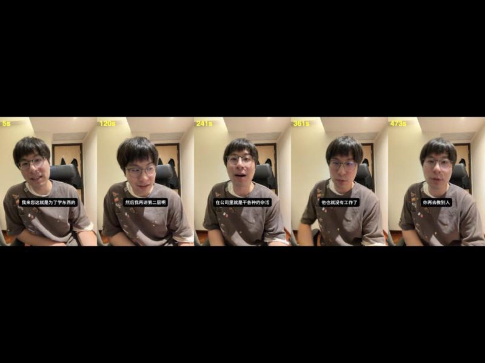
《为什么总有人要来公司学东西？》8:01，开头 / 25% / 50% / 75% / 结尾抽帧。作品链接 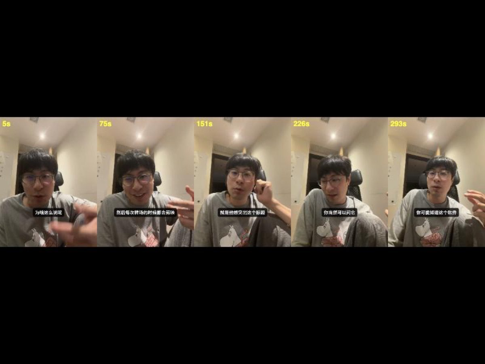
《审美不行，啥 AI 来了也白搭》5:01，同一位置、同一套光。作品链接 《AI 时代如何在一个月之内搞定工作》8:16。作品链接 老师原图局部 书桌右端的大型乐高城堡，他自己布置的收藏；视频里没出现过，因为他一直对着门口自拍。置顶《为什么头部 AI 公司，集体放慢脚步？》168 秒：16:9 平视，背后玻璃手办柜和小火龙，最有辨识度，就在这间书房。作品链接
观察到的拍摄习惯（事实） 对布景的要求（推断）
4 条样本全是坐着口播，单机位一条过，5–8 分钟 固定一个“坐下就能拍”的位置：灯、支架常驻，不用每次搭 思考类用 3:4 竖屏、手机前置自拍、略俯拍；AI 讲解用 16:9 横屏 同一机位要同时裁得出竖屏和横屏，记忆点放在两种裁切的交集里 背景是房间门口：木门、黑色办公椅、空调出风口、筒灯直射，偏暗偏黄 换背景方向，门洞和空调口出画；人脸要有独立主光 手势多，经常伸出画面 相机后退到约 1.8 m，平视，给手势留边 口播常被剪辑师裁成小窗、叠在录屏和图形上（对标博主同样如此） 缩成小卡片也要认得出：人物与背景要分层，背景一个主色
02 · 原场景诊断
房间不小，问题是“没有一面为镜头准备的墙”
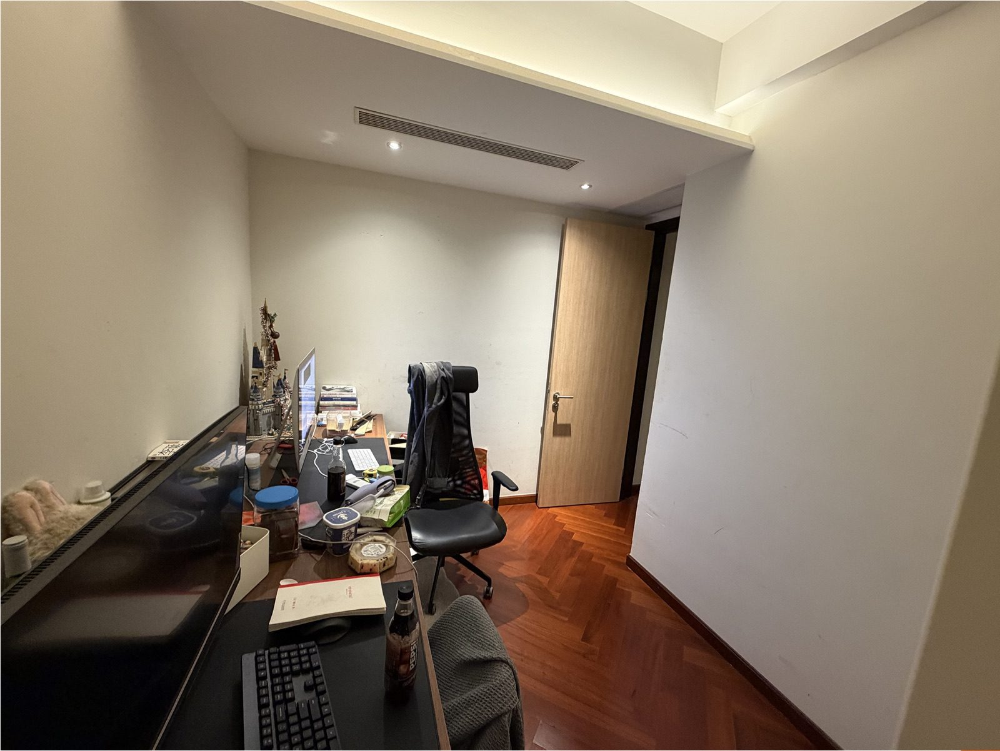
老师提供实拍 从窗边看向门口和右墙。右墙空白，正是这次要做背景的墙。老师提供实拍 从入口看向窗和书桌。330 cm 长桌占满一整面墙，桌面杂物多。
画面里能确认的问题
现在的口播背景是门口和空调口，没有任何属于他的东西
只有天花筒灯，顶光让眼窝发暗，人和墙混在一起
长书桌、杂物、衣柜顶堆放物在多个角度入镜
小火龙和乐高城堡这些最有辨识度的收藏，散落在桌角，没被拍好
需要现场复测的
层高（模型按 2.7 m）、书桌进深（按 0.75 m）、衣柜长度（按约 1.2 m）
门的开启方向，以及入口凹位的净宽
右墙插座位置（灯带、灯牌、背景灯都要取电）
右墙挂毛毡板用免钉胶还是挂钩（租房要先问房东）
03 · 看他的对标怎么拍
借鉴三位对标博主，再往前走一步
三位都是他在置顶合作说明里点名的对标。我逐条抽帧看了他们的口播画面，下面写清借鉴了什么、哪里做得更好。
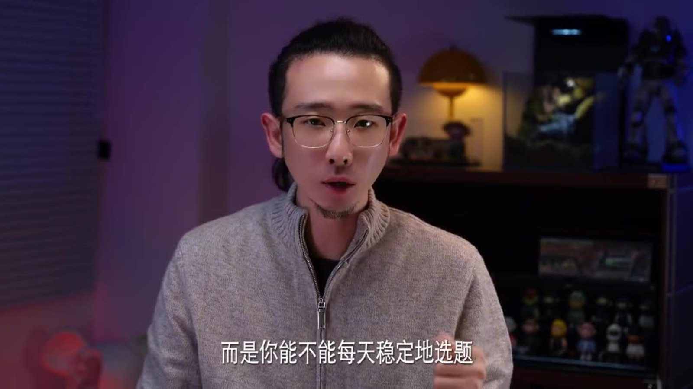
胡泊 Hubo
抖音 achg111，约 10.6 万粉丝。《Github零基础保姆级教程》 ；出镜亮度约 62/255，典型暗调。
借鉴： 金属柜放手办，暖色蘑菇台灯，冷色墙光：冷墙暖物。
更进一步： 他红、黄、蓝紫光同时出现略杂，我们只留蓝紫和暖橙。
秋芝2046
B 站约 110.6 万粉丝。《全网最全！40分钟全面掌握Codex》 22 秒
借鉴： 背景压暗只留紫色 + 霓虹标志，人脸柔光；缩成小窗也认得出。
更进一步： 人到墙仅约 0.6 m 难虚化，改靠背景暗 2–3 档 + 顶部轮廓光分层。
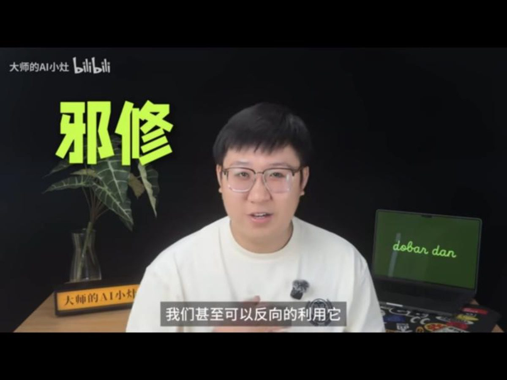
大师的AI小灶
B 站。《再见了AI抽卡，5分钟搞懂AI生图的底层逻辑》 99 秒
借鉴： 纯黑背景，桌上品牌名牌灯箱；口播常裁成竖向小卡片。
更进一步： 头部右上放火焰图形小灯牌，呼应小火龙和“火”，竖横都在画内。
画面逐项对照：他们怎么拍，我们怎么拍
从露出多少身体到光从哪来，逐项对照胡泊、秋芝和本方案。
胡泊 Hubo 秋芝2046 本方案 · AI 效果示意
每张卡：对标做法 → 本方案
👤 露出身体胡泊、秋芝都是紧胸像，头顶留白约 5–8%→ 胸口以上，底边在桌面以上
💻 电脑、灯具都在画外，秋芝远处有虚化屏幕→ 都在画外
🎯 位置与视线居中或略偏左，直视镜头→ 居中略偏左，左右两侧都有布置
✋ 手势胡泊偶尔入画，秋芝常抬到肩高→ 人前和两侧留出手臂空间
🔆 整体亮度胡泊背景约 17–42、秋芝约 35–39（/255）→ 亮一档 ：背景约 55、人脸约 100，手机竖屏不糊、收藏看得清
🎨 背景颜色胡泊白墙 + 蓝紫光、左下红光；秋芝浓紫光→ 深灰毛毡板 + 柜后蓝紫光，左下一团暖红
⭐ 最亮背景点胡泊琥珀蘑菇台灯，秋芝粉色闪电霓虹→ 小火龙、台灯和火焰图形灯牌
🪟 窗胡泊画左一条压暗百叶帘→ 窗在相机背后，整面遮光帘
📏 背景距离约 1.5–3 m（推断），中到重度虚化→ 人到背景仅约 0.6 m，靠毛毡板和光比分层
胡泊现场用了哪些光，我们怎么对应
他的现场：大柔光主光、带网格顶光、蓝红两盏彩灯。逐项对应见 05 灯位图图例。
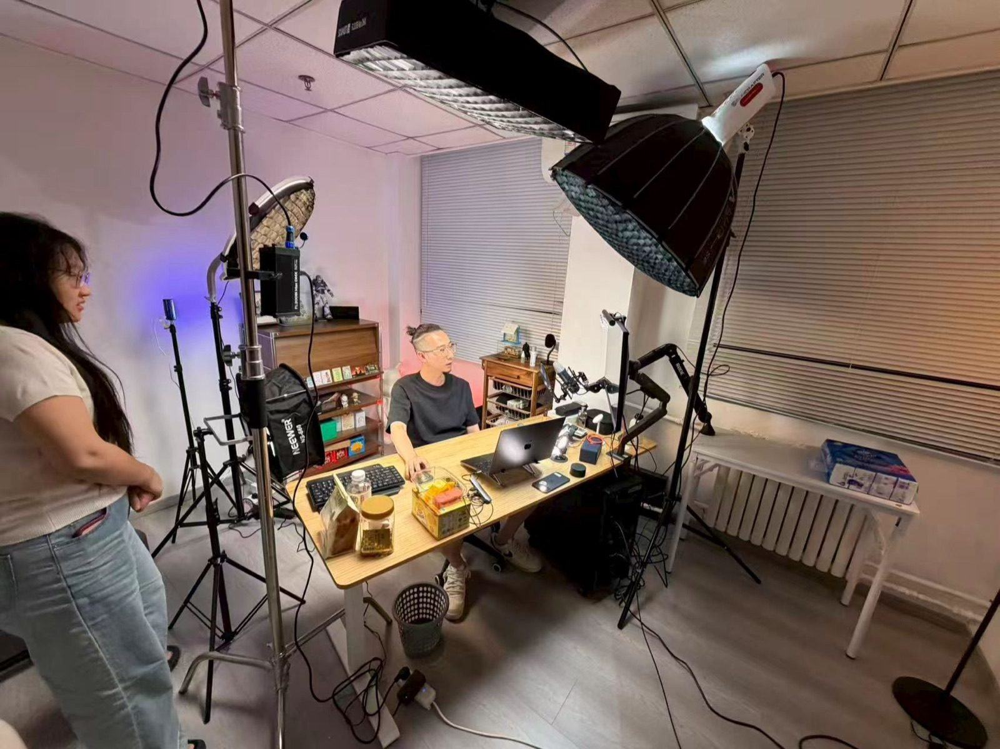
胡泊拍摄现场 右前方大型深口抛物线柔光箱做主光，头顶带网格的条形柔光做顶光，左侧圆形柔光和蓝色小灯管，椅子后方红光；房间本身是普通办公室。
从胡泊看得到的一角，反推他整间屋子
他只露出身后虚化的一块。左列是画面里的线索，右列是据此推断的画面外布置。
画面里的线索 推断画面外是什么
脸左侧亮、右颊有柔和阴影，眼镜里有一块大而柔的反光 主光是一块大柔光，放在相机左前方、略高于眼睛 阴影一侧没有完全黑掉，但比亮侧暗很多 有一盏低功率辅光 整个背景笼在低亮度蓝紫光里，右侧更冷更亮 柜子后面或画面右外侧藏着一到两盏 RGB 灯，朝墙打 左下角有一团品红光，红色公仔边缘被照亮 左下方地面还有一盏小彩光 左边缘是百叶帘，帘面发紫，没有日光透进来 窗户被完全遮住，只靠人造光 头部右后方一盏琥珀色蘑菇台灯，柜内小灯点亮手办 背景用实景灯做暖点，和蓝紫墙光形成冷暖对比 胸口以上近景，看不出下面有桌子，背景虚化，透视平 他坐在桌后，但镜头只拍到胸口；相机在桌子对面约 1.5–2 m，平视，中长焦 他坐在桌后，但电脑不入镜 电脑在桌上侧面，拍摄时不进画面 画面里没有门、没有天花灯 拍摄时顶灯关闭，门和杂物都在画外
布光原则参考：三点布光（主光约 45°、辅光在对侧压阴影、轮廓光把人从背景分开）、小房间里背景光可后补、戴眼镜时抬高主光避开反光。来源见文末。
04 · 方案
五个设计决定
每一条都按“内容证据 → 设计决定 → 对人设或拍摄的作用”来写。
改造前 · 实拍 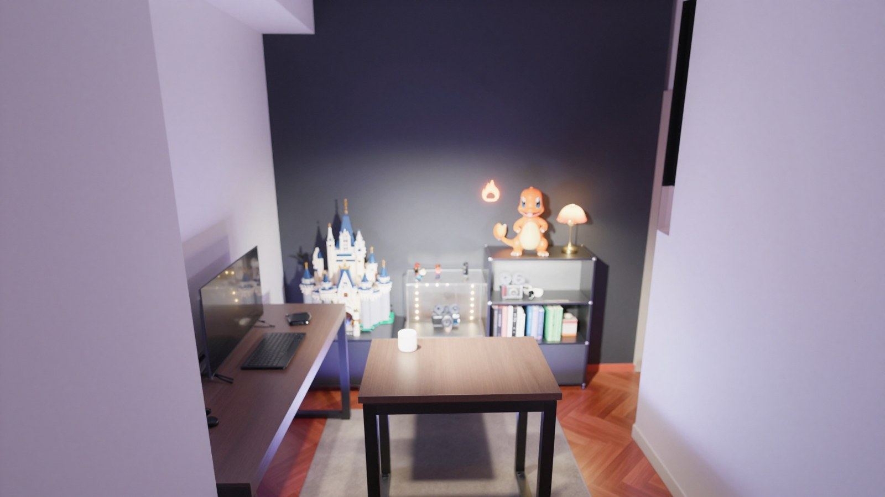
改造后 · AI 效果示意 接近原图角度：从窗边看向收藏墙。左侧办公桌靠墙，中间是 80×50 拍摄桌。
05 · 平面、机位、灯位
L 形两张桌：面朝镜头拍，转 90° 办公
小拍摄桌放在房间中间，人坐桌后、背对收藏墙；办公桌靠书桌墙，两张桌成 L 形，一把转椅两用；相机在窗前。所有角度来自同一个按尺寸搭的 3D 模型，尺寸以老师原图标注为准，未标注的到场复测。
平面俯视图见 07「房间每个位置」的带编号平面图，下文编号与之对应。
为什么这样排
桌后坐，桌子不入镜： 参照胡泊和秋芝只拍胸口以上。拍摄桌只要 80×50 cm，让手有地方放。办公桌单独靠墙： 两块屏并排在他正前方 50–60 cm，屏幕上沿与眼睛齐平；拍摄时转回来面对镜头，屏幕在镜头左外侧，拍不到。不用机械臂，也不用每天搬屏幕。衣柜移到书桌墙： 原来的位置在相机和灯后面，每次拿东西都要挪灯。相机在窗前： 距人约 1.7 m，中长焦压缩背景。通道： 座位后到收藏柜约 0.5 m，起身不卡；从门口直接走到座位。主光用横杆灯架，立杆靠墙，衣柜门开合不碰灯。
机位与灯光参数
照着摆就能拍
距离、高度来自按尺寸搭的 3D 模型，到场用卷尺复测；功率是起调值，以监看画面为准。
入口 书房 330 × 230 cm · 俯视 衣柜 办公桌 · 双屏 拍摄桌 ≈30° 1.7 m 1 2 3 4 5 6 7 8 9 10 17 人物 背距柜约 0.5 m 相机 高 1.2 m · 平视 主光（横杆） 距人约 1 m · 前左约 30° 高 1.7 m · 俯 20° 顶光 头顶偏后 · 高 2.3 m 辅光 距人 1.4 m · 高 1.4 m 窗 · 遮光帘 暖红角光城堡柜后 低柜 + 城堡小射灯 蓝紫背景光柜后向上 火焰灯牌高 1.4 m 展示柜小火龙 · 台灯 灯位俯视示意 按 3D 模型尺寸绘制，编号与 07 平面图一致。
1 人物 坐桌后，桌子不入镜 · 胡泊：同样桌后坐 2 相机 中长焦压缩背景 · 胡泊：平视近景，人偏左 3 主光 横杆灯架，前左约 30°，抬高避镜片反光 · 胡泊：大深抛 + 网格 4 顶光 勾出发丝肩线，脱离暗背景 · 胡泊：头顶条形网格灯 5 辅光 光比 1:3–1:4，比反光板好控 · 胡泊：圆形网格柔光 6·7 收藏点光 几个暖点引导视线 · 胡泊：琥珀台灯、柜内小灯 8 蓝紫背景光 毛毡板下亮上暗 · 胡泊：蓝色灯管打墙 9 暖红角光 冷背景里一团暖 · 胡泊：椅后红粉光 10 火焰灯牌 竖横都在画内的品牌符号 · 胡泊：无 17 窗与顶灯 只用人造光，颜色稳定 · 胡泊：百叶帘放下、顶灯关
编号 器材 关键参数
1 座位与两张桌 拍摄桌 80×50 cm 放房间中部；办公桌 140×60 cm 靠书桌墙，与拍摄桌成 L 形；无头枕中背转椅，背到收藏柜约 0.5 m；两张桌都在画外 2 横屏机位（主） 窗前距人约 1.7 m，镜头高约 1.2 m 平视；手机约 2 倍（48–52 mm 等效）或 50 mm f/2–2.8；胸口以上，人略偏左 2 竖屏机位 同一位置换竖拍；手机约 3 倍（约 70 mm 等效），人居中 — 拍摄设置 4K 25/30 帧，快门 1/50，ISO 尽量低，白平衡锁 4300K，曝光以脸为准 3 主光 200W 双色温 COB + 90 cm 深口抛物线柔光箱 + 网格；5000K，30–50% 起调；横杆灯架，立杆靠书桌墙（衣柜与办公桌之间），灯头伸到人物前左约 30°、距人约 1 m，高约 1.7 m、向下约 20° 4 顶光（轮廓） 60W COB + 30×120 条形柔光箱 + 网格；3800K，20–30%；右上角灯架加横杆伸到头顶偏后，高约 2.3 m 5 辅光 60W COB + 60 cm 深口柔光箱 + 网格；约主光 1/4；相机右侧，离人约 1.4 m，高约 1.4 m 6 · 7 收藏点光 小火龙、城堡各一盏小射灯 + 展示柜灯带 + 柜顶蘑菇台灯；2700K，小火龙最亮 8 蓝紫背景光 RGB 棒灯，蓝紫 20–30%，展示柜后贴墙向上；城堡射灯最低档，柜门选深色 9 暖红角光 RGB 管灯，红橙 10–15%，城堡低柜后地上 10 火焰霓虹灯牌 约 30 cm 宽，暖橙；挂毛毡板，高约 1.4 m、与头顶齐平 17 顶灯、窗 拍摄时天花筒灯关、遮光帘拉严
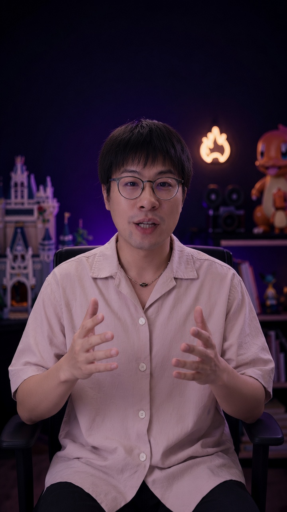
AI 效果示意 · 9:16 竖屏 上半身到腰、手势入画
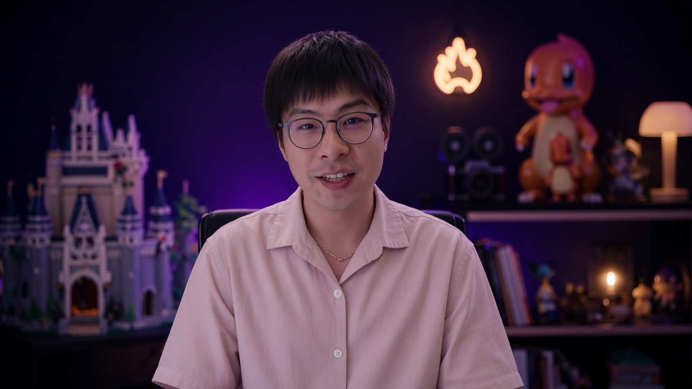
AI 效果示意 · 16:9 机位画面 胸口以上近景，桌子在画外；左侧城堡、右侧展示柜，灯牌在头部右侧、与头顶齐平。AI 效果示意 · 幕后 编号同灯位图；4 号顶光在画面上方外。
06 · 灯光
五盏摄影灯 + 实景灯，对齐胡泊的配置
每盏灯的位置和参数见 05 灯位图。
💡 人脸最亮主光从前左打亮脸，辅光只压阴影，不抢主光。
🌒 背景暗一档毛毡板吸光，顶光把人从暗背景里勾出来。
🚫 只用人造光关筒灯、拉严遮光帘，每条视频颜色一致。
07 · 房间每个位置
镜头里拍什么，镜头外放什么
平面图（3D 模型）标出每样东西的位置，再按区域看。区域图为拍摄状态的 AI 效果示意，人物非本人。
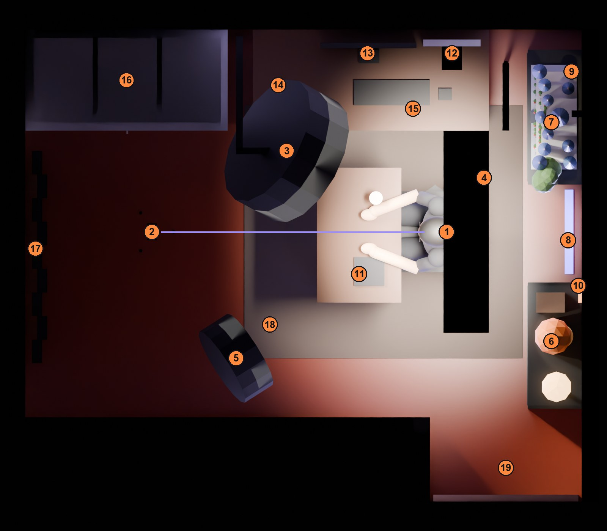
3D 模型 · 平面俯视 紫线为镜头视线。
1 座位：中背办公椅2 相机：窗前，高 1.2 m3 主光：深口抛物线 + 网格4 顶光：条形柔光 + 横杆5 辅光：小深抛 + 网格6 展示柜 + 小火龙 + 台灯7 低柜 + 乐高城堡 + 绿植8 蓝紫背景光（柜后）9 暖红背景光（城堡后）10 火焰霓虹灯牌11 拍摄桌 80×50（画外）12 iMac（办公桌右）13 黑色显示器（办公桌左）14 办公桌下主机15 办公桌 140×60（靠书桌墙）16 衣柜 + 收纳箱（书桌墙）17 全遮光帘（整面窗）18 地毯19 入口与门
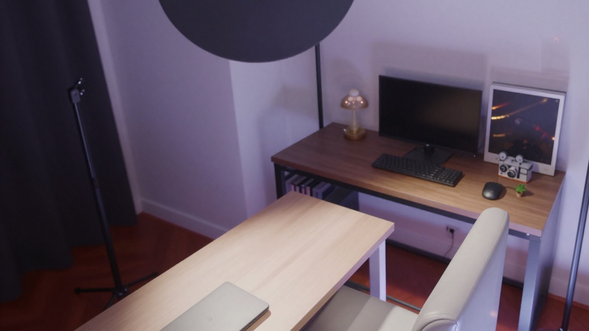
AI 效果示意 · 书桌与办公 11–16 办公：转椅转 90°，两块屏在正前方
办公桌靠书桌墙，黑色显示器和 iMac 并排，离眼睛 50–60 cm，屏幕上沿与眼睛齐平。 拍摄时转回来面对镜头，办公桌在镜头左外侧。 主机放办公桌下，推车也收进桌下。
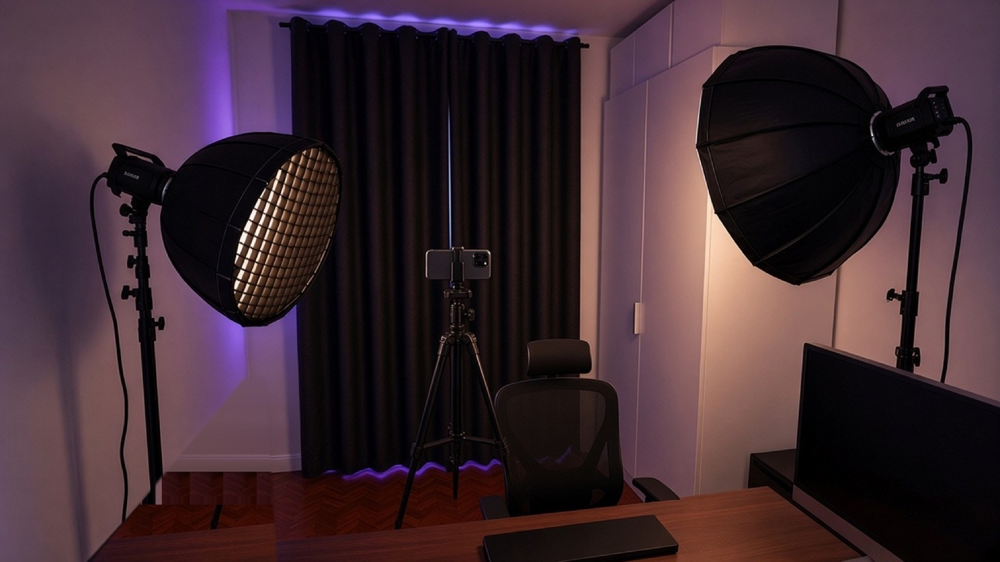
AI 效果示意 · 机位与窗（镜头外） 2 · 3 · 5 · 17 机位：窗前一台相机，左右两盏灯
相机在窗前，平视，距人约 1.8 m；遮光帘整面拉严。 主光是横杆灯架，立杆靠墙、灯头伸到人物前左；辅光在相机右侧。
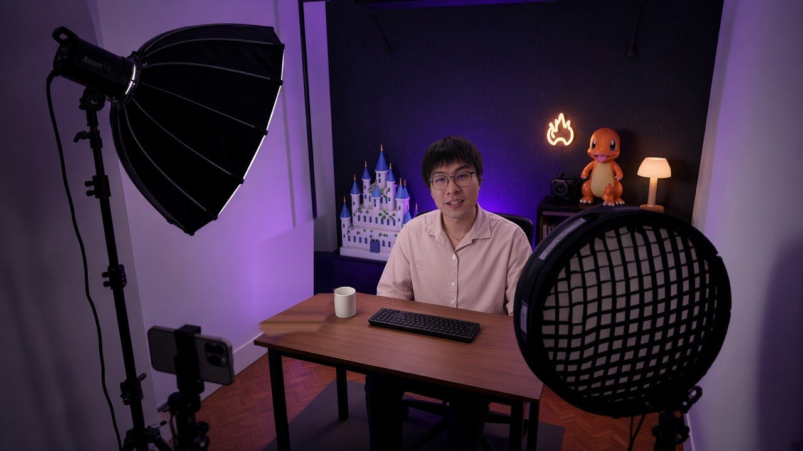
AI 效果示意 · 幕后 1–5 幕后：对照胡泊的现场，但整齐
和胡泊相同的配置：桌后坐、大深抛主光、网格辅光、头顶条形顶光、彩色背景光。
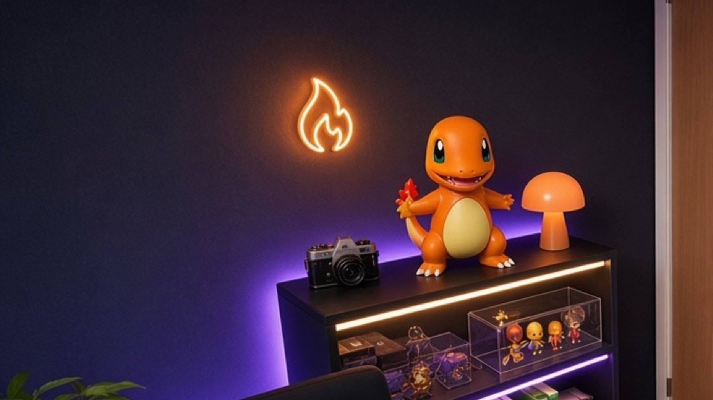
AI 效果示意 · 入口与通道 6 · 7 · 19 入口：进门先看到收藏墙
门洞 90 cm 保持畅通，从门口直走到座位；座位后到收藏柜约 0.5 m。 不拍摄时开着柜内灯带和台灯，就是一间好看的书房。
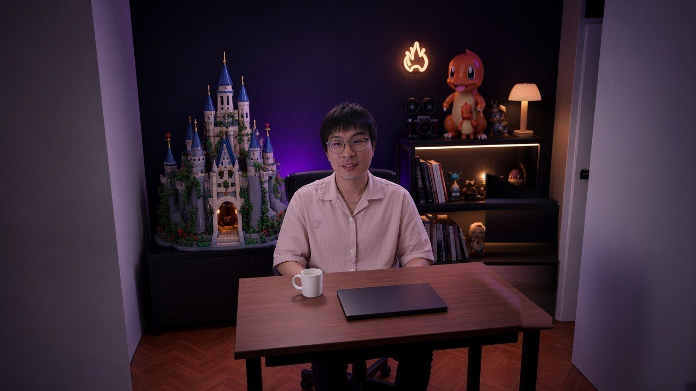
AI 效果示意 · 窗边全景 全部 全景：L 形两张桌，一把转椅
左上衣柜，上方靠墙办公桌，左侧窗与机位，中间拍摄桌与座位，右侧收藏墙，右下入口。
从门口走进房间 漫游视频一共两版，各约 14 秒，从入口走进房间，最后落到拍摄机位。点击播放，带背景音乐。
新版 · L 形布局 靠墙办公桌、80×50 拍摄桌、横杆主光，与上方平面图一致；3D 白模渲染，房间里没有人。旧版 · 调整办公桌前 写实效果；电脑还在拍摄桌两角、显示器上机械臂，人物为示意。
音乐《Dreamy Flashback》Kevin MacLeod (incompetech.com)，CC BY 4.0
08 · 视频里好看，现场也好看
比胡泊多做一步：房间本身也要好看
胡泊的质感来自灯光和镜头，现场却是白墙办公室、灯架线缆铺满地面。我们画面同样好看，现场也整齐。
现场怎么收拾
三根灯架统一黑色：主光横杆灯架立在衣柜与办公桌之间靠墙，辅光在相机旁，顶光灯架在右上角，都不占通道，也不挡衣柜门。
彩色灯全部藏在柜子后面，画面里只看到光，现场也看不到灯。
电源线沿墙脚、柜后和桌下理线架走，地上不留线。
出镜穿什么
纯色上衣：深藏青、深炭灰（像秋芝，同色系），或浅燕麦灰针织（像胡泊，拉开反差）。
避免纯白和高亮色：暗调画面里会比脸还亮，观众视线会落到衣服上。
避免大面积图案和 logo，缩成小窗时会变成噪点。
他视频里常穿浅灰、带图案的 T 恤，这条建议需要和他本人沟通。
09 · 每样东西留还是换
房间里的每样东西，保留或更换都有原因
总原则：拍口播只用人造光；能用他已有的东西就不买；不动硬装；花钱优先放在灯光和镜头看得到的位置。
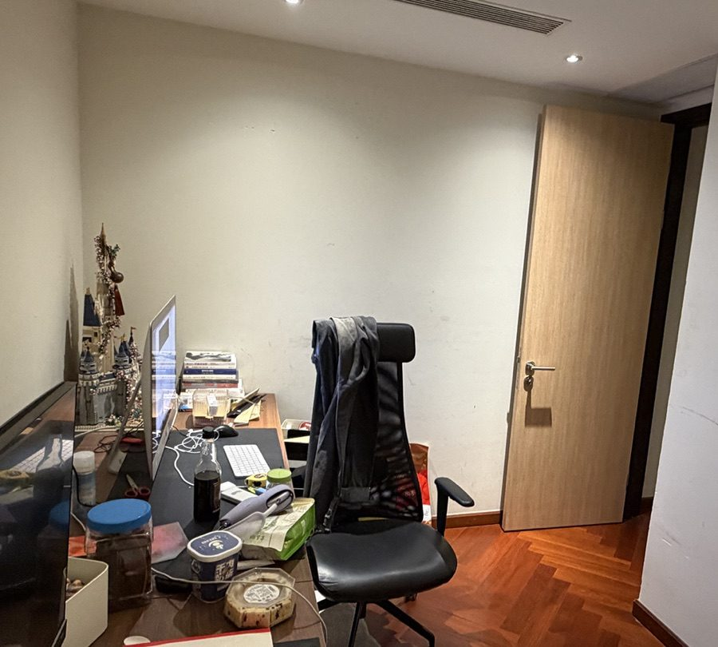
老师原图局部 原书桌上一台黑色大显示器、一台 iMac，他日常在这里办公和录屏。
两台电脑怎么放
办公时： 转椅转 90° 面向靠墙的办公桌，黑色显示器（左）和 iMac（右）并排在正前方 50–60 cm，屏幕上沿与眼睛齐平。拍摄时： 转回来面对镜头，两块屏熄屏，在镜头左外侧，不用挪动。胡泊拍摄时电脑也不入镜。走线： 主机放办公桌下，线走理线架，沿墙脚到插座。为什么不用机械臂： 屏幕挤在拍摄桌两角、办公时要歪头看；机械臂每天拉来推去也麻烦。分成 L 形两张桌，办公姿势标准，拍摄时什么都不用动。
✅ 留墙、门、窗框、空调口 ：不动硬装，都在画外红棕人字拼地板 ：和暖色台灯同调，加地毯压反光天花筒灯 ：日常照明用，拍摄时关白色衣柜 ：移到书桌墙左段，不再挡灯挡窗黑色推车 ：收进办公桌下，不入镜显示器、iMac ：上靠墙办公桌，并排在正前方小火龙 ：画面焦点，头部高度、右肩外乐高城堡 ：移到左侧低柜，0 元手办、乐高小件、摄影机模型 ：进展示柜书 ：留一部分放柜底层，书脊统一🔄 换咖色窗帘 → 全遮光帘 ：≥99% 深灰落地；日光会变，前后不一致330 cm 长桌 → L 形两张桌 ：140×60 办公桌靠墙 + 80×50 拍摄桌，腾出衣柜位人体工学椅 → 无头枕中背椅 ：头枕会冒出头后；可拆就继续用两块圆白地毯 → 一块深色地毯 ：图案不杂，转椅更稳桌面杂物 → 清走 ：幕后角度会拍到毛绒公仔等 → 收进柜子 ：不合“AI 观点博主”定位➕ 加深灰毛毡板（右墙，不刷墙） ：人离墙 0.6 m，白墙会被照灰；吸音、可拆，租房可用3 个白色收纳箱 ：收起衣柜顶堆放物，和衣柜同色灯、展示柜、低柜等 ：见 10 采购清单
10 · 采购清单与预算
预计总额
相机、麦克风另算。价格为拼多多列表起价（2026-11-04），按尺寸定价的已预留，下单前逐项核实。
编号 物品 用途与位置 来源 / 优先级 规格 数量 单价 小计 平台 / 链接 状态
先买什么 主光、辅光、顶光、遮光帘、新书桌先到位，就能拍出八成效果；背景灯、展示柜后补。
预算砍半时保留什么 保留主光、辅光、顶光和遮光帘；书桌用旧桌截短或二手，柜子用现有家具，背景灯先一盏。
版本迭代
改了 10 版，才定下这一稿
房间白模布局改了 8 版，主画面 AI 出图跑了 13 轮、24 张候选。下面按顺序列出主画面每一版和没选它的原因。
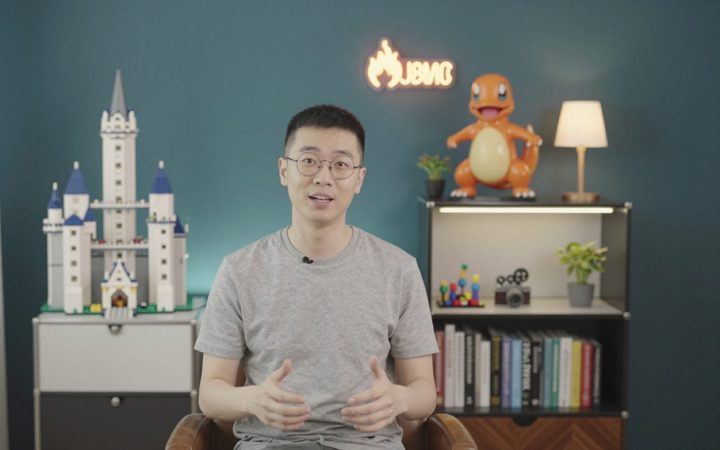
第 1 版 · 太亮 像白天的家居照，和胡泊、秋芝的暗调差太远；背景绿墙也不像他的风格。
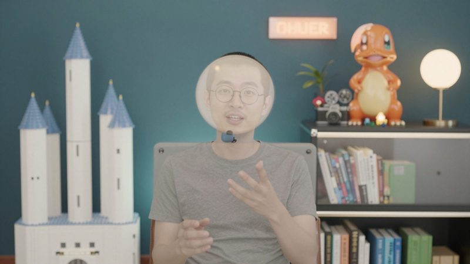
第 2 版 · 白模穿帮 方块人头被 AI 画成玻璃罩，人物不可信。改：白模做成人形。
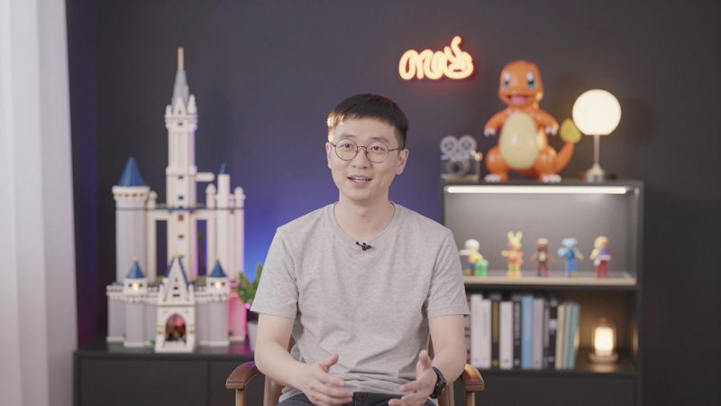
第 3 版 · 灰、露太多 背景发灰没有层次，身体露到腰，灯牌出现乱码字。
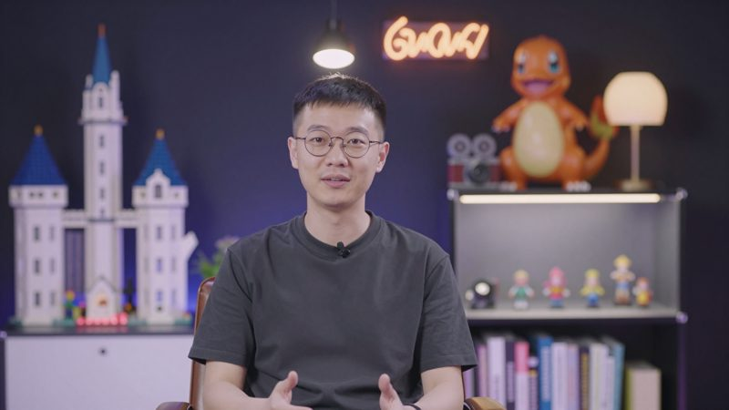
第 4 版 · 头顶出灯泡 提示词写了顶光，AI 在头顶画了灯；灯牌仍是乱码。改：只描述光的效果。
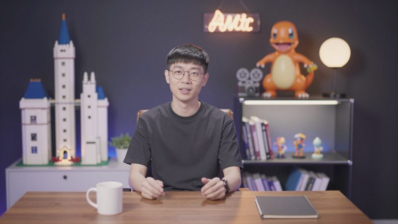
第 5 版 · 桌子入镜 桌面、杯子、本子都进了画面；胡泊、秋芝的口播画面里看不到桌子。
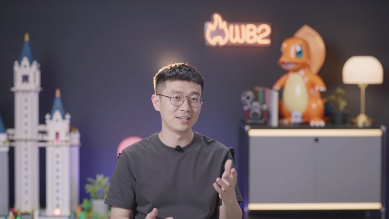
第 6 版 · 城堡不像 城堡被画成白色高塔，不是他那座乐高迪士尼城堡；灯牌写成乱码。
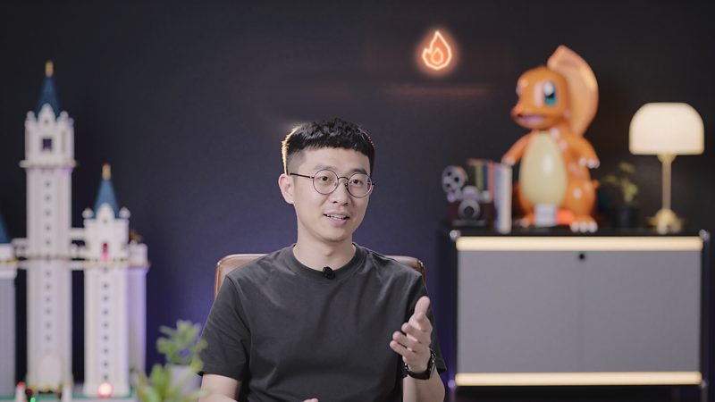
第 7 版 · 构图对了 胸口以上、桌子出画、灯牌改成手绘火苗；但人物不是他本人。
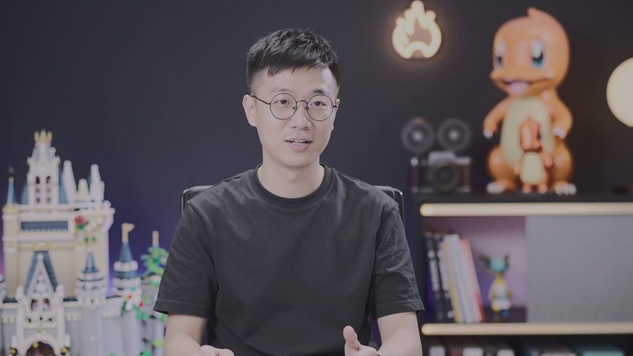
第 8 版 · 城堡重做 按他的乐高迪士尼城堡重做，小火龙、灯牌降到头部高度；人物仍不是本人。
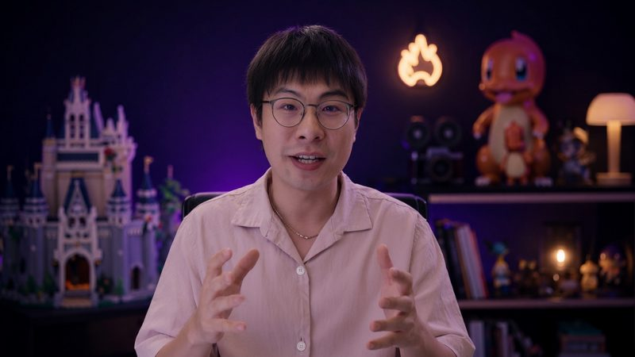
第 9 版 · 换成本人 换成张秋之本人形象，只有主图换了，竖屏和机位图还没统一。
定稿 · 第 10 版 本人形象、胸口以上、桌子和灯都在画外，背景亮度取胡泊与秋芝之间；横屏、竖屏、机位图全部统一。
11 · AI 过程记录
3D 白模定位置，AI 只负责质感
12 · 落地前要验证的
最可能出问题的地方
毛毡板用免钉胶或挂钩固定，先问房东；撕下不留痕的款优先。
灯牌、灯带、背景灯共 4–5 个电源，右墙插座不够要加一个排插并理线。
量两台显示器宽度（两台并排约 1.1–1.2 m），确认 140 cm 办公桌放得下；量座位后到收藏柜的距离，不足 0.5 m 就把拍摄桌再往窗边挪。
衣柜移到书桌墙前，量书桌墙左段宽度（衣柜约 1.2 m）和柜门开启空间。
主光距离人只有 1 m，镜片反光要现场试；不行就把主光再抬高 10–20 cm、外移 15°。
小火龙等收藏的实际尺寸决定柜子层高，买柜前先量。
乐高城堡来自原图、视频里没出现过：先问博主愿不愿意让它出镜；不愿意就换成置顶视频里出现过的乐高小人和火箭模型，左侧低柜照用。
门的开启方向确认后，再定入口一侧柜子的最终宽度。
IP助理课 · B 场景 · 2026-11 · 所有 AI 图均为效果示意，图中人物非博主本人；布置以 3D 模型和平面图为准